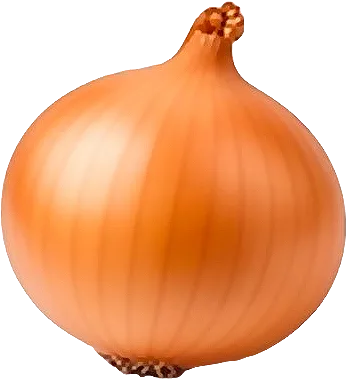

Oignon

Base de presque toutes les cuisines ; le rosé de Roscoff est AOP.
- Saison : janvier, février, mars, juillet, août, septembre, octobre, novembre, décembre
- Pleine saison : septembre, octobre
- Famille botanique : Amaryllidacées
Histoire
Originaire d’Asie centrale, l’oignon est cultivé depuis plus de 5 000 ans. En Égypte ancienne, il nourrissait les ouvriers des pyramides et symbolisait l’éternité. Facile à conserver, il s’est imposé comme la base de presque toutes les cuisines du monde.
Origine et régions de production
L’oignon est cultivé dans de nombreuses régions françaises :
- Hauts-de-France
- Grand Est
- Bretagne
- Cévennes
L’oignon rosé de Roscoff et l’oignon doux des Cévennes bénéficient tous deux d’une AOP.
Bienfaits
L’oignon est modeste mais précieux :
- Quercétine : Un antioxydant présent surtout dans les couches extérieures.
- Fibres prébiotiques : Elles nourrissent la flore intestinale.
- Peu calorique : Environ 40 kcal/100 g.
- Composés soufrés : Ce sont eux qui font pleurer en l’épluchant.
Variétés
- Jaune : Le plus courant, pour tout cuisiner.
- Rouge : Doux, idéal cru en salade.
- Blanc : Primeur, vendu en botte au printemps.
- Rosé de Roscoff : AOP bretonne, doux et fruité.
- Doux des Cévennes : AOP, si doux qu’il se croque cru.
Conserver sans gaspiller
- Conservation : Au sec, à l’air, loin des pommes de terre : plusieurs semaines. Entamé, au frigo dans une boîte.
- Congélation : Émincé cru ou compoté : jusqu’à 6 mois.
- Rien ne se jette : Les peaux colorent et parfument un bouillon. Un oignon qui germe se cuit quand même, ou se replante.